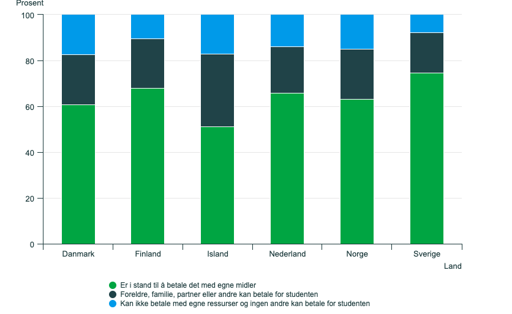

Norske studenter står overfor en rekke økonomiske utfordringer, inkludert å håndtere uforutsette utgifter. Ifølge den nyeste EUROSTUDENT-undersøkelsen har rundt 63 prosent av studentene i Norge råd til å betale uforutsette kostnader på opptil 8000 kroner, noe som er et positivt tegn som indikerer bedre økonomisk trygghet for de fleste studenter På den andre siden er det likevel 37 prosent som enten må få hjelp av familie eller venner, eller som må stå uten økonomiske ressurser til å dekke slike utgifter. 15 prosent av disse 37 prosent er studenter som sitter i en sårbar posisjon hvordan de verken har egne midler eller noen å støtte seg på.
Studentenes økonomiske situasjon påvirker deres livskvalitet og akademiske prestasjoner betydelig mye. Studenter som kan og har muligheten til å håndtere slike utgifter, som for eksempel ødelagt PC, eller en ødelagt telefon, bil, slipper at disse bekymringene skal gå utover studiene. At 63 prosent av norske studenter har denne evnen og mulighet virker som et relativt godt utgangspunkt sammenlignet med andre land. Vi kan imidlertid ikke overse de 15 prosentene som står utenfor denne økonomiske sikkerheten. Det bør være støtte og programmer for å hjelpe disse studentene til en tryggere og mer stabil studiesituasjon.
